The flow diagram for the Single Crystallization example is shown below. This example is a very simple single crystallization process that only uses a pan, crystallizer and centrifugal to boil and crystallize a syrup into a massecuite that can be processed by a continuous centrifugal to separate the crystalline sugar from the mother liquor. External sources are used for the steam, syrup and centrifugal wash water (i.e., they are external flows) and the molasses and sugar leave the flow diagram without any recycle. All flows that leave each station are internal flows. For example, the massecuite flow from the pan to the crystallizer, from the crystallizer to the centrifugal, vapor and condensate flows out of the pan, and sugar and molasses flows out of the centrifugal. Crystallization is controlled by the input data for the pan and crystallizer stations, and the separation of mother liquor and sugar from the massecuite is controlled by the input data used for the centrifugal to define the performance characteristics of the centrifugal station. More complicated models are developed using the same techniques as used for this simple model.
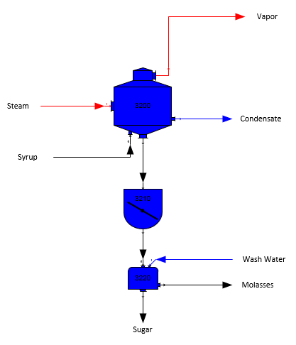
The Single Crystallization model is already built and located in the "...\Sugars\Examples" directory. Either double click on the "Single Crystallization.vsd" file from Windows Explorer, or open it from within Visio.
The two external flows into the pan are "Steam" and "Syrup". The steam flow is a required flow; that is, Sugars will calculate the quantity of steam consumed by the pan. The syrup flow has to be completely defined, with pressure, temperature, quantity, components, color, and solubility coefficients. Also, currency value numbers can be given if the net process revenues are to be calculated by Sugars.
To enter data for the characteristics of the steam flow into the pan, place the cursor on the steam flow line (the cursor will change to have four crossing arrows when the line is selected) and double click the left mouse button to get the external flow input window shown below (shown with data already entered).
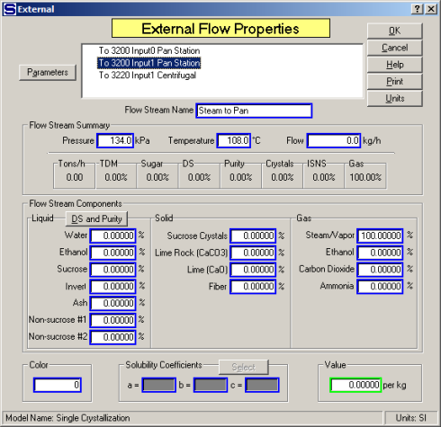
Enter the name of the flow stream as "Steam to Pan", enter 0.0 for pressure, 108°C for the steam temperature and 100% for the "Gas" component "Steam/Vapor". No entry is needed for the solubility coefficients because the steam flow does not contain any non-sucrose components. And, no entry is made for the quantity of flow because it will be calculated by Sugars; that is, it is a required flow. Place the cursor on the OK button and press the left mouse button. Sugars will calculate the pressure from the steam temperature for saturated steam. The window should appear as shown above after the OK button is pressed. After the OK button is pressed, Sugars will calculate the steam pressure assuming that the steam into the pan is saturated at the entered temperature of 108°C.
Next, place the cursor on the syrup flow line (the cursor will change to have four crossing arrows with a large white arrow when the line is selected) and double click the left mouse button to get the external flow input window shown below (shown with data already entered).
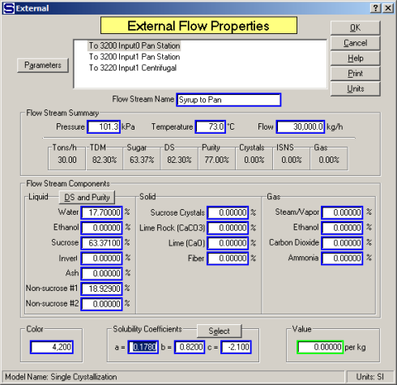
The entries for the syrup flow to the pan should appear as shown in the above window. The quantity of syrup flow into the pan must be specified (30,000 kg/h for this example) before Sugars can do the balance calculations. Also, the temperature of the flow (73°C for this example), the solubility equation coefficients (Grut values are used for this example) and component fractions (entered as 82.30%DS and 77.0 Purity) must be given. Use the "DS and Purity" button to the right of "Liquid" and above "Water (H2O)" in the Flow Stream Components grouping to obtain a small window to enter 82.30%DS and 77.0 Purity values. Sugars will calculate the "Water (H2O)", "Sucrose" and "Non-Sucrose #1" components using the %DS and Purity values entered in the small popup window. A color value of 4,200 is entered for the syrup. When all of the entries have been made, place the cursor on the OK button and click the left mouse button to accept the input values and return to the flow diagram.
Next, move the mouse cursor over the pan station until the cursor changes to a large white arrow with four crossing black arrows and then double click the left mouse button to bring up the pan station input parameter’s window as shown below (shown with entries already made).
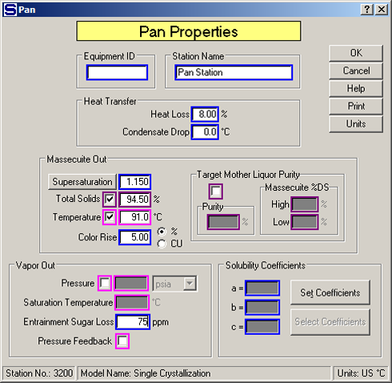
Enter the name "Pan Station" for the pan and then enter the values as shown on above window. That is, enter Supersaturation = 1.150, Total Solids = 94.50%, Temperature = 91.0°C, Color Rise % = 5.00, Entrainment Sugar Loss PPM = 75 and Heat Loss % = 8.00. See Pan Properties for an explanation of each of the input values. When all entries are made, place the cursor on the OK button and click the left mouse button to accept the input values and return to the flow diagram. Notice that the pan station color is now yellow.
Move the mouse cursor over the crystallizer station until the cursor changes black crossing arrows. Double click the left mouse button to bring up the Crystallizer Properties window as shown below (shown with entries already made).
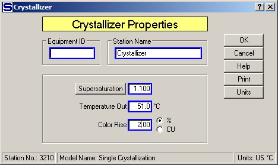
Enter the name of the crystallizer (e.g., "Crystallizer") in the Station Name field. Next, enter a 1.100 supersaturation coefficient, a temperature of 51°C and a color rise of 2.00% for the massecuite leaving the crystallizer; that is, the massecuite will be cooled from 91°C to 51°C with a drop in supersaturation from 1.15 to 1.10 as it passes through the crystallizer after leaving the pan (see the Crystallizer Properties for an explanation of each input parameter). When all entries are made, place the cursor on the OK button and click the left mouse button to accept the input values and return to the flow diagram (crystallizer station color is now yellow).
Next, enter the characteristics of the wash flow going to the centrifugal. Move the mouse cursor over the wash flow line going to the centrifugal until it has four black crossing arrows. Double click using the left mouse button to obtain the data entry window for the wash water going to the centrifugal as shown in the window below (shown with data already entered).
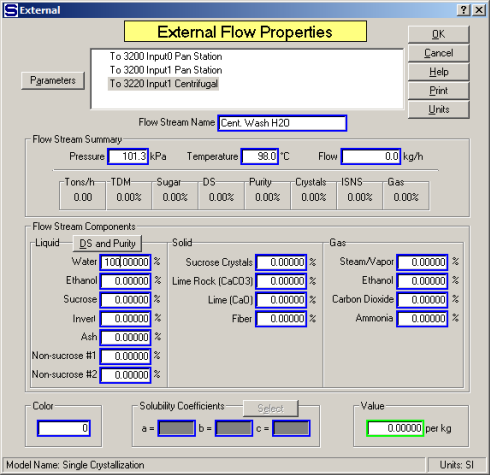
Enter a name for the external flow; for example, "Cent. Wash H2O". Next, enter the pressure (101.3kPa) and temperature (98.0°C) of the wash water. The quantity of water flow will be calculated by Sugars since the wash water is required by the centrifugal and the quantity of wash water is controlled by the performance data entered for the centrifugal. Finally, enter 100.00 in the Water (H2O) component entry field. If syrup washing is used, flow fractions for the syrup could be enter instead of 100% water, and if steam is used, a percentage can be entered for the fraction of the flow that is made up of steam. When all entries are completed, place the cursor on the OK button and click the left mouse button to accept the input values and return to the flow diagram view in Visio.
Next, select the centrifugal shape with the cursor and double click the left mouse button (or click the right mouse button and select "Sugars Properties" from the drop-down menu). This will bring up a window from Sugars about the start of a centrifugal evaluation (see the window shown below).
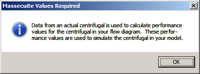
A centrifugal evaluation must be done to determine the performance of the centrifugal that is being used in the model. Actual operating data is necessary to provide the performance data used for the evaluation, and the results of the evaluation will be used to predict the results from the centrifugal when the balance calculations are done. Press the Enter key, or click the left mouse button on the OK button, to begin the evaluation and advance to the massecuite evaluation window (see window shown below with data already entered).
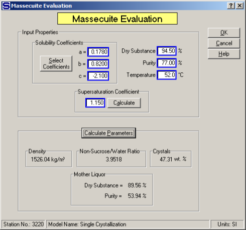
Enter the characteristics of the massecuite flowing to the centrifugal from actual operating data (for example, select Grut Solubility Coefficients, Supersaturation Coefficient = 1.150, Dry Substance = 94.50%, Purity = 77.00% and Temperature = 52.0°C). The solubility equation coefficients, %DS, Purity, temperature and supersaturation values entered for this massecuite may be different then the massecuite that flows into the centrifugal when the balance calculations are done - the data entered should be from actual operating data. The massecuite Specific Weight, Non-Sucrose/Water Ratio, crystal weight content (Crystals), and mother liquor %DS and Purity are displayed as the data is entered. Also, the Calculate Parameters button can be pressed to update the results at any time.
Next, click on the OK button to advance to the centrifugal evaluation window (see the window shown below with data already entered).
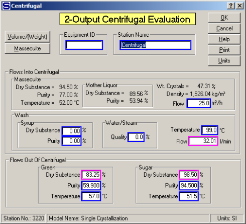
See the 2-Output Centrifugal Properties section for an explanation of each of the input parameters. The results from an actual centrifugal operation, using the same massecuite as used for the massecuite evaluation, should be entered as shown on the window above (i.e., Massecuite Flow = 25.0, Wash Temp. = 99.0°C, Green %DS = 83.25, Purity = 59.90 and Temperature = 57.00°C, Sugar %DS = 98.50, Purity = 94.50 and Temperature = 51.5°C). Fields in magenta color (three fields) are optional fields in which only two of the three fields need entries - the third field, where an entry isn't made, will be calculated by Sugars. For example, enter values for the "Green Dry Substance" and "Sugar Dry Substance" and the "Wash Flow" in l/min will be calculated. Or, if the "Wash Flow" in l/min is entered along with the "Green Dry Substance", the "Sugar Dry Substance" will be calculated. After making all of the necessary entries, click on the OK button to accept the entries and the unknown value will be calculated and displayed by Sugars. Click the OK button again to get the window showing the "2-Output Centrifugal Performance Calculation" results as shown in the window below.
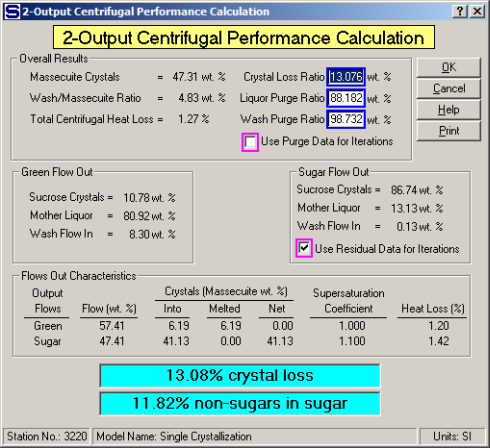
The results from this window show that 57.41% of the massecuite and wash water into the centrifugal go out the green (molasses) flow line and 47.41% go out the sugar line. Some crystals pass through the screen to the green flow (6.19% by weight) by melting. No crystals are lost in the sugar flow out. The total loss of sucrose crystals is 13.076% from the crystals in the massecuite entering the centrifugal (highlighted section at bottom of the window). Also, 98.732% of the wash water in and 88.182% of the mother liquor is purged out to the green (molasses). The total heat loss in the centrifugal is 1.27%. Of the non-sucrose components into the centrifugal, 11.82% of them remain with the sugar flow out. The total crystal loss and non-Sugars remaining with the sugar are highlighted at the bottom of the window. Good centrifugal operation will result in low values for these parameters. The sugar flow out parameters of mother liquor and wash water residues will be held during the balance calculations (this is the default selection by Sugars as shown by the check in the check box next to the "Use Residual Data for Iterations" option). The Crystal Loss Ratio, Liquor Purge Ratio and Wash Purge Ratio parameters can be selected for use during the balance calculations (instead of the residue values) by clicking in the box next to the "Use Residual Data for Iterations". The choice of residue, or ratio, value is optional and may depend on the operating conditions in the factory. Also, the performance evaluation results for ratio values can be edited by entering new values for "Crystal Loss Ratio", "Liquor Purge Ratio", or "Wash Purge Ratio". Changing ratio values will result in new values for %DS and Purity of green and sugar flows out of the centrifugal (they will be displayed on the input data window if the performance results are edited).
Click the OK button to return to the flow diagram display in Visio after reviewing the 2-Output Centrifugal Performance Calculation results.
All of the required input data has been entered for this example. Therefore, the balance calculations can be done. The full balance icon on the Sugars ribbon tab (see the window shown below) shows a red box to indicate that the model is unbalanced.
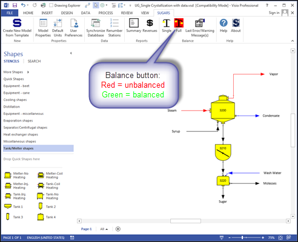
Click on the full balance icon, and the balance calculations will start. The calculations should proceed quickly and the full balance icon should change to the color green to indicate that a balance was achieved.
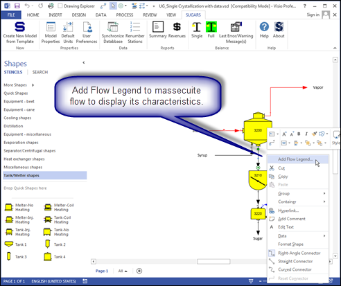
Right click on the massecuite flow stream connected to the output of the vacuum pan and the input of the crystallizer and select "Add Flow Legend" (see the above window).
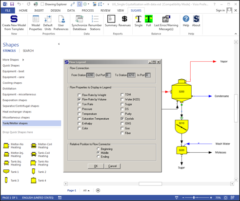
On the Flow Legend selection windows (see above), select "Flow Rate by Volume", "Crystals" and "Middle" to display the volume quantity of massecuite leaving the pan and the crystal content of the massecuite. Middle is selected to display the data in the middle of the flow stream (see window below). Click the OK button to display the data. The data can be moved to the desired location on the drawing after it is displayed.
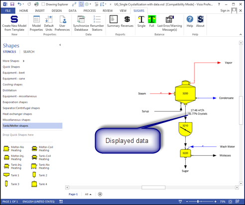
Double click with the left mouse button on any flow stream to see the details of the flow stream. Click on the Parameters button to display engineering parameters of the flow (volume, specific weight, enthalpy, specific heat, supersaturation, and boiling point elevation) while viewing the details of a flow stream. For example, double click on the massecuite flow from the pan to see the characteristics of the massecuite from the pan and then click on the parameters button to determine the enthalpy of the massecuite leaving the pan (see the window below). This information is available for any flow stream in the model.
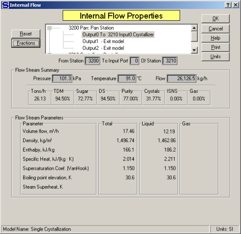
From the flow diagram window, click the "Summary report" icon to display a report of all of the flow streams in the model (see the window below). Material and heating flows to and from each station are shown on the report with the quantity, % sugar, % purity, % crystallization, temperature, color and other flow characteristics given for each flow stream.
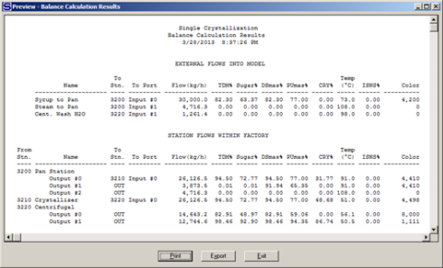
Reviewing the results of the material flows printout, it can be seen that the percent crystallization of the massecuite out of the pan is 31.77% and after the massecuite leaves the crystallizer, the percent crystallization has increased to 48.68%.
Reviewing the results for the steam flow to the pan shows that the pan requires 4,728.2 kg/h of steam to accomplish the evaporation and crystallization for this example. Also, the vapor flow from the pan shows a 0.01% TDM and 0.01% Sugar content: these values are due to the entrainment (droplets) loss in the vapor.
After the results from the calculations are printed out, the model can be saved by clicking on the save icon on the Visio toolbar, or clicking on the Visio file menu item and selecting Save, or Save as from the drop-down menu. Saving the model will save the results from the balance calculations and all of the input data entered for the performance of each station and the characteristics of each external flow.
Making changes to this example is useful to become more familiar with Sugars. Additional stations can be added to gain experience with adding stations and the results obtained from further processing of the flow streams using other stations. For example, add more boilings and try a different juice (syrup) input flow to see the effect on molasses purity and sugar yield.